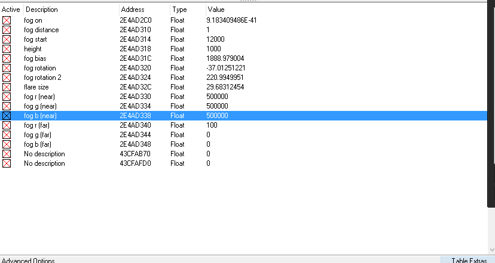

Bo2 Fog mod/Depth matte tutorial
right click -> save as
1. Get cheat engine
2. open bo2, pick a clip
3. open the fog.ct file using cheat engine, once it opened, click the red/green glowing button and choose the bo2 process (keep address list)
4. in the list of addresses, select all the checkboxes on the left (set them to active)and change 'fog on' to 1
(if 'fog on' is set to NaN, don't check it yet.
Instead, change it to 1 first, then go ingame and press play for a second, then click the chermark in cheat engine and change it to 1 once again)
the value will most likely return to its original value, and sometimes flicker to the value you set it to, but don't worry, it will work
5. change the fog values, try to change fog start and fog distance.
just double click on the value and you're ready
BEFORE DOING THE STEPS, KNOW THIS:
# Always restart the game if you're done using cheat engine, just closing cheat engine is not enough!
# Only use this method in theater mode. (private match is safe, but only if you keep it private, if you let someone join you, it's over, VAC will take you).
Making a depth matte using the fog mod
*requires a working bo2 console
To get a depthmatte, download this config and execute it using your bo2 console
(you might have to play with the exposure value a bit)
next, apply the following settings in the cheat engine file:

to disable the depth matte, execute this config and uncheck all the boxes in cheat engine.
you might have to press the play or play back button ingame in order to reset the fog
Footer note: the fog mod was originally founded by Gmzorz and Azsry
the depth config/image was made/found by Digital Citizen